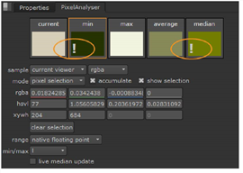

分析仪的 全框架 默认情况下，模式对查看器的可见区域进行采样。因此，更改可见区域的操作 (如放大和缩小) 会更改可用颜色值。
注意: 启用 全帧处理 强制 Pixel Analyzer 分析整个帧，而不考虑当前可见的查看器部分。
| 1。 | 将查看器连接到要分析的输出。您可以将多个查看器连接到单个输出，反之亦然，以进行比较。 |
| 2. | 单击内容菜单 并选择 像素分析仪 . |
的 像素分析仪 面板显示。
| 3. | 使用 样品 下拉列表来控制哪个查看器和层提供样本信息: |
• 观众 -默认, 当前查看器 ,如果有多个，总是对活动查看器进行采样。在查看器中选择像素或单击查看器的选项卡会导致查看器成为活动查看器或当前查看器。或者，当多个打开时，可以从下拉列表中选择一个命名查看器。
• 层 -默认, 当前层 ,显示在查看器中指定的层 通道 下拉列表。
注意: 如果 Rgba 通道不存在，前四个可用通道值写入像素分析仪的 Rgba 控制。
注意: 色样可能无法及时更新，如果你选择一个层, 样品 当前在查看器中不可见的下拉列表，因为在计算样本之前，必须在背景中渲染新层。
或者，您可以从下拉列表中选择命名层。在查看器之间切换时，像素分析器会尝试匹配新查看器中的选定层。如果该层不存在，则默认 当前层 显示。
提示: 您可以使用 层 下拉列表对查看器中未显示的层进行采样，允许您比较层之间的位置和颜色值。
| 4. | 确保模式下拉列表设置为 全框架 . |
| 5. | 单击要显示的色板 Rgba 和 Hsvl 选定样例的颜色值。 |
像素分析仪也检测 Inf (无限) 和 楠 (不是数字) 颜色值。的 ! 样例中的点指示 inf/nan 值。

| 6. | 使用 范围 下拉菜单选择要显示的颜色位深度。例如，选择 8 位 将颜色值限制为 255。 |
| 7. | 设置 最小/最大 要用于计算最小/最大色样的通道。 |
此控件默认为亮度 (l)，但是如果您希望仅在红色通道中显示最小值，例如，您可以设置 最小/最大 红色 (r)。
|
|